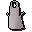
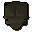
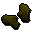
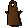
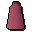
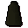
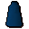
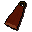
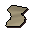

Thessalia Fine Clothes.
Inventory config
clotheshopRun by  Thessalia. Open in knowledge graph →
Thessalia. Open in knowledge graph →
Located in: Varrock
Stock
| Item | Stock | Value | Sells for |
|---|---|---|---|
 White apron | 3 | 2 gp | 2 gp |
 Leather body | 12 | 21 gp | 21 gp |
 Leather gloves | 10 | 6 gp | 6 gp |
| 10 | 6 gp | 6 gp | |
 Brown apron | 1 | 2 gp | 2 gp |
 Pink skirt | 5 | 2 gp | 2 gp |
 Black skirt | 3 | 2 gp | 2 gp |
 Blue skirt | 2 | 2 gp | 2 gp |
 Cape | 4 | 2 gp | 2 gp |
 Silk | 5 | 30 gp | 30 gp |
| 3 | 5 gp | 5 gp | |
| Priest gown | 3 | 5 gp | 5 gp |
Shop sells at 100.0% of item value and buys at 55.0%.